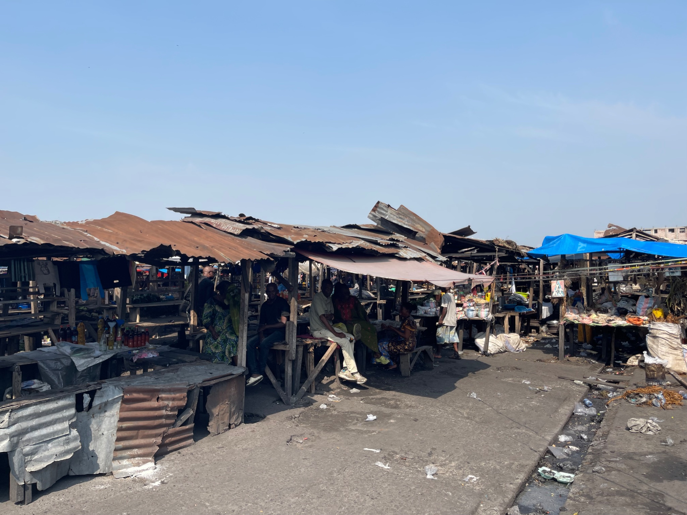
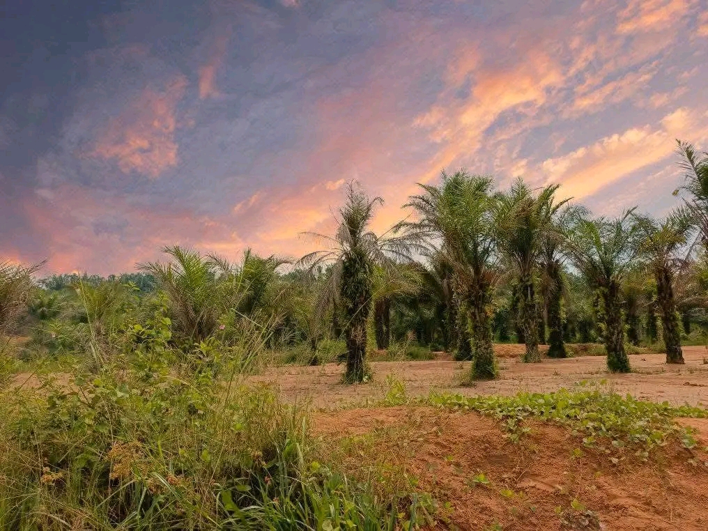

Lieux à visiter
Kananga regorge de sites touristiques et culturels uniques qui témoignent de sa richesse historique et de sa beauté naturelle.

Marché central
Un lieu animé où se rencontrent commerçants et habitants autour de produits locaux.

Cathédrale Saint-Joseph
Un monument religieux emblématique de la ville, chargé d’histoire et de spiritualité.

Parc naturel
Un espace vert idéal pour la détente et la découverte de la faune et flore locales.